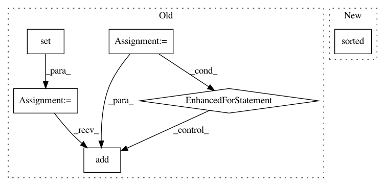

93671933a1cb70b162add89159317ecb437126d6,src/BayesianModel/BayesianModel.py,BayesianModel,_no_missing_states,#BayesianModel#,270
Before Change
>>> bayesian_model._no_missing_states("difficulty", ("hard", "easy"))
True
_all_states = set()
for state in self.node[node]["_states"]:
_all_states.add(state["name"])
missing_states = _all_states - set(states)
if missing_states:
raise Exceptions.MissingStatesError(missing_states)
After Change
>>> bayesian_model._no_missing_states("difficulty", ("hard", "easy"))
True
if sorted(self.node[node]["_states"]) == sorted(states):
return True
else:
raise Exceptions.MissingStatesError(set(self.node[node]["_states"]) - set(states))
In pattern: SUPERPATTERN
Frequency: 3
Non-data size: 6
Instances
Project Name: pgmpy/pgmpy
Commit Name: 93671933a1cb70b162add89159317ecb437126d6
Time: 2014-01-01
Author: ankurankan@gmail.com
File Name: src/BayesianModel/BayesianModel.py
Class Name: BayesianModel
Method Name: _no_missing_states
Project Name: dit/dit
Commit Name: 608fff2119f21191352ddf5d96eb82fc1ab099b0
Time: 2013-02-25
Author: chebee7i@gmail.com
File Name: dit/utils/misc.py
Class Name:
Method Name: partitions
Project Name: IDSIA/sacred
Commit Name: 443e179cfaf8f5502002fbd8e480685d2991eade
Time: 2017-09-14
Author: qwlouse@gmail.com
File Name: sacred/initialize.py
Class Name:
Method Name: create_run